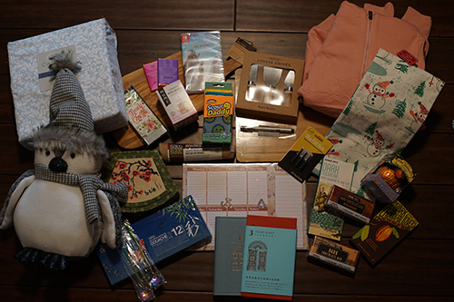
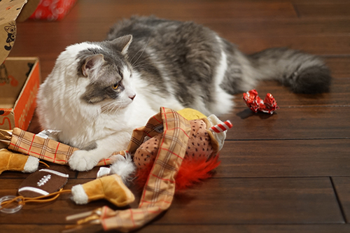
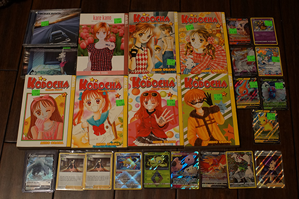

I hope you are all having a good Christmas! We will be free from the incessant christmas music and movies in just a few hours, so stay strong! I have just barely survived this year. The only christmas movie I will agree to watch is Elf, which I did watch this year.
I got way more gifts than I deserved this year! Somehow making an amazon wishlist worked out for the first time ever. I secretly hope the items on the list weren't purchased on Amazon but I'm sure they were ._.
THIS IS NOT CHOCOLATE! ALERT! ALERT!
I've never played this one before. This better have the JP audio!!!!! Gackt!!!!!!
Guess I should probably toss my melted plastic cutting board now...
I'm not entirely sure what this is for or why I got it. Is it supposed to work with the multiliner?
Just an amazon brand but I like the shade of pink. It currently doesn't smell very good.
Ryan saved him when he fell into a tealight and then traded for him in the white elephant game.
I decided on this one over autumn even though autumn would be better for painting. This one had what I need for faceups. Maybe Praline won't end up blue next time haha
After many discussions with hors, I decided this one would be the best for me. I threw out the idea of another planner after realizing I have no plans and I like the idea of seeing what I wrote last year. The 5 year cover is much prettier but I want the space to write a little bit more. I want to make an extra cute cover for it though!
EXACTLY what I wanted
Ryan got a comfy christmas cardigan which I am stealing as well as the all-in-one Death Note manga which I am also stealing. Light has his shirt open on the front so we all know this should be mine!
We went to a consignment shop we visit a few times a year. I found some cute pokecards and Ryan also found a few! Mine are on the right and his are on the bottom.
I think this was one of the ones I passed on for $3.
I went back to the booth at the consignment shop I previously bought Kodocha 4 at and they had so many more this time!! My dumb b*tt didn't bother to update my manga page with which volume I already had but google saved my butt in finding the blog post on the fly.